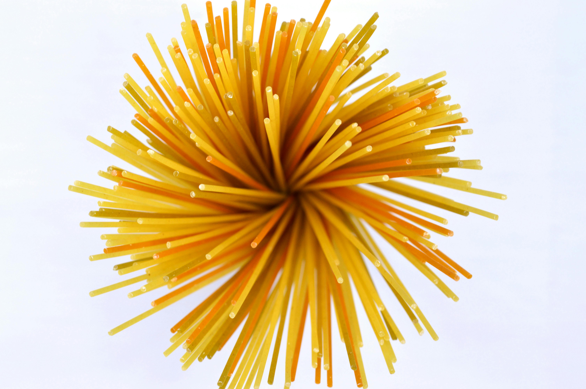

Pasta Recipe

Delicious fresh Pasta
Pesto pasta is simple to make and full of flavor. This recipe is perfect
for busy weeknights and comes together in just 15 minutes. Use any pasta,
and add as much pesto sauce as you like. Enjoy topped with plenty of
Parmesan cheese.
Ingredients:
- 1 (16 ounce) package pasta
- 2 tablespoons olive oil
- ½ cup chopped onion
- 2 ½ tablespoons pesto or more to taste
- salt to taste
- freshly ground black pepper to taste
- 2 tablespoons grated Parmesan cheese
Steps:
-
Fill a large pot with lightly salted water and bring to a rolling boil.
Stir in pasta and return to a boil. Cook pasta uncovered, stirring
occasionally, until tender yet firm to the bite, about 8 to 10 minutes.
Drain and transfer into a large bowl. Fill a large pot with lightly
salted water and bring to a rolling boil. Stir in pasta and return to a
boil. Cook pasta uncovered, stirring occasionally, until tender yet firm
to the bite, about 8 to 10 minutes. Drain and transfer into a large
bowl.
-
Meanwhile, heat oil in a frying pan over medium-low heat. Add onion;
cook and stir until softened, about 3 minutes.
- Stir in pesto, salt, and pepper until warmed through.
-
Add pesto mixture to hot pasta; stir in grated cheese and toss well to
coat.
Add pesto mixture to hot pasta; stir in grated cheese and toss well to
coat.
Home